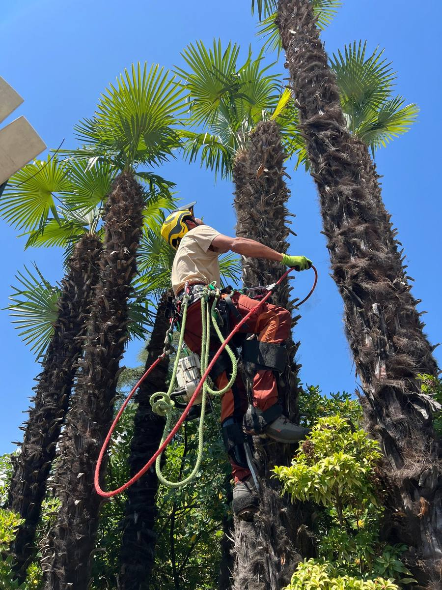
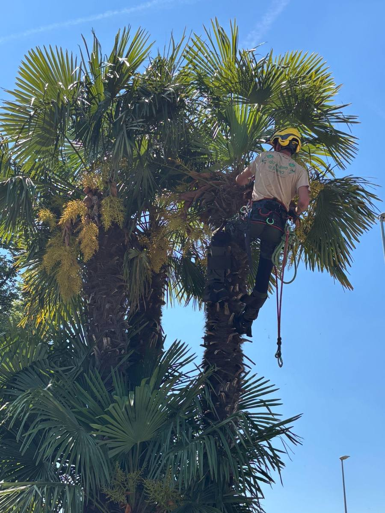
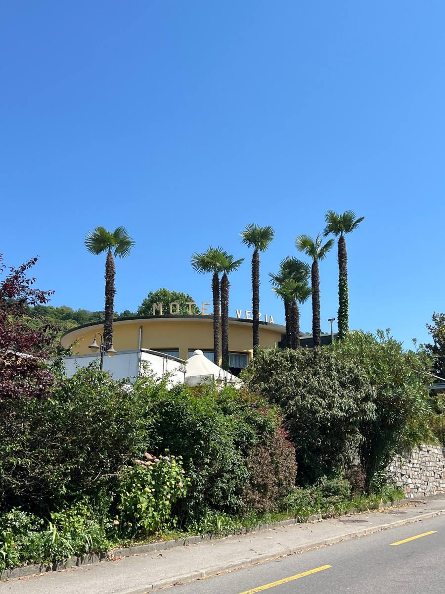
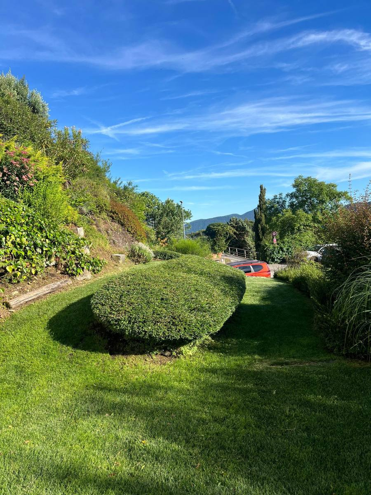
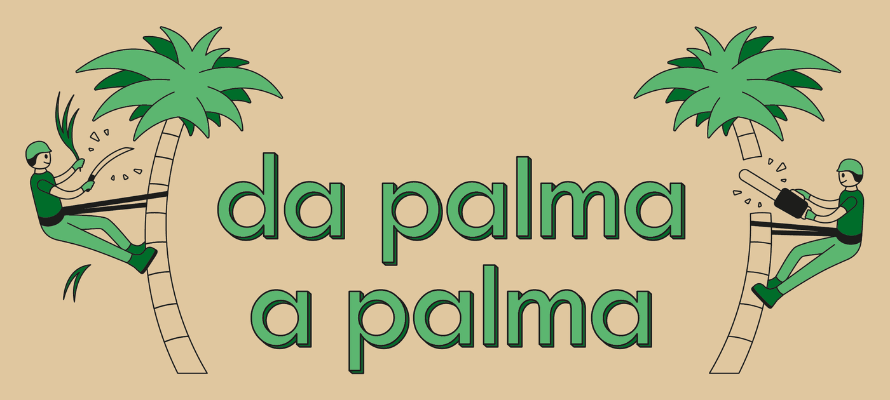

Cosa facciamo
Manutenzione e potatura palme
Interventi mirati di potatura e pulizia della chioma, per garantire ordine, salute e sicurezza.
Taglio dei fiori della palma
Ogni anno a maggio tagliamo i fiori prima che diventino semi, per evitare che la palma si diffonda nei giardini e nei boschi.
Manutenzione del verde
Cura e sistemazione di giardini e aree verdi, per valorizzare ogni spazio esterno.
I nostri lavori
-

Potatura in quota -

Taglio dei fiori -

Palme pulite e in ordine -

Manutenzione del verde
Domande frequenti
Quando si potano le palme?
Le foglie secche e i resti dei fiori si possono togliere in ogni stagione. Per una pulizia completa conviene intervenire in primavera o in estate. Le foglie verdi sane è meglio lasciarle: nutrono la palma, e toglierne troppe la indebolisce.
Quando bisogna tagliare i fiori della palma?
A maggio, prima che si formino i frutti, e va ripetuto ogni anno. La palma di Fortune, la più diffusa in Ticino, è una specie invasiva: i suoi semi la fanno crescere nei giardini vicini e nei boschi. Sulle palme alte bisogna salire in sicurezza, ed è il nostro lavoro.
Cosa fare con le palme che nascono da sole in giardino o nel bosco?
Le piantine piccole si strappano con tutte le radici. Quelle fino a circa 60 cm si tolgono con la vanga, quelle più grandi vanno tagliate alla base. Se sono alte o vicine a case e tetti, ce ne occupiamo noi.
Dove si buttano fiori, frutti e foglie della palma?
Fiori tagliati e foglie vanno nel compost o negli scarti vegetali. I frutti e i semi maturi vanno chiusi bene in un sacco e buttati con i rifiuti domestici, così non germogliano altrove.
In quali zone lavoriamo?
Abbiamo sede a Purasca e lavoriamo in tutto il Malcantone, nel Luganese e nel resto del Ticino.
Contatti
- WhatsApp e telefono +41 76 546 85 41
- Email info@dapalmaapalma.ch
- Dove trovarci Apri su Google Maps
